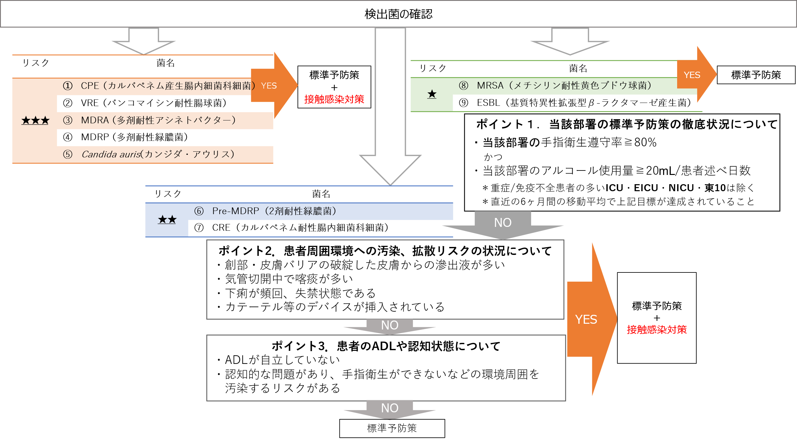
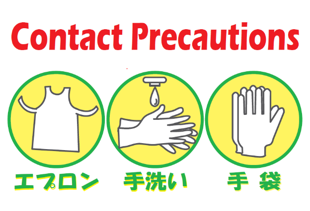
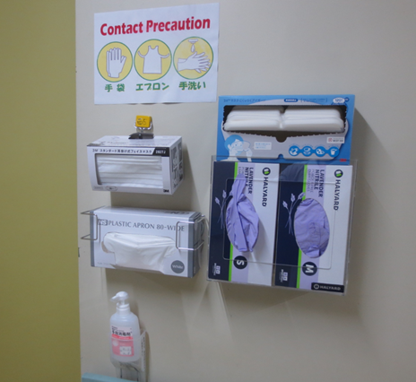
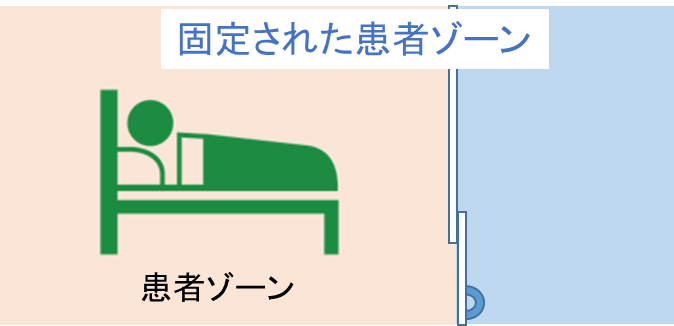
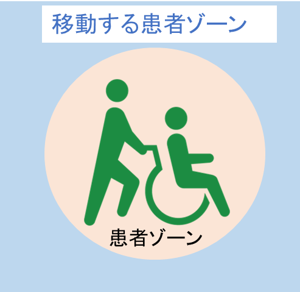
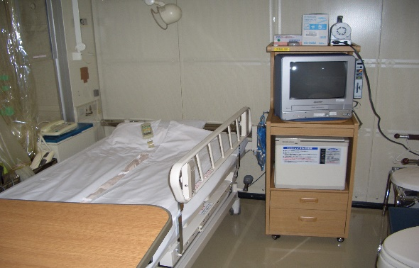
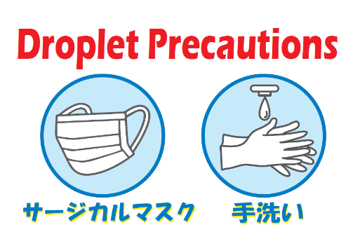
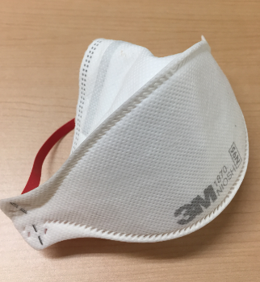
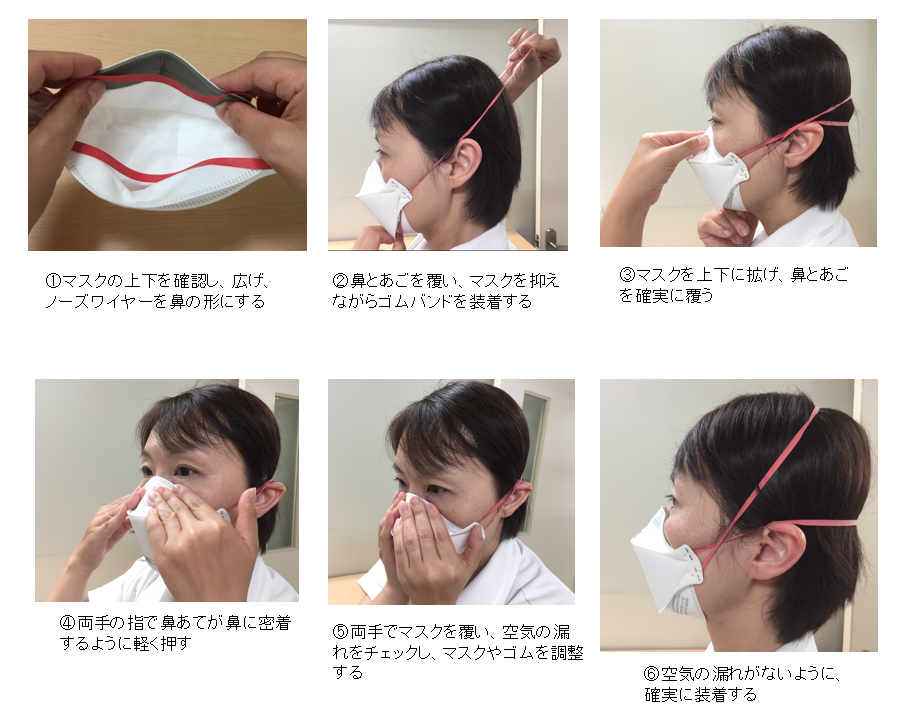

Ⅱ. 隔離予防策 2. 感染経路別予防策
標準予防策を実施するだけでは、伝播を予防することが困難な患者には、標準予防策に加えて感染経路別予防策を実施する。
感染経路別予防策には以下の３つがある。
- 接触感染予防策
- 飛沫感染予防策
- 空気感染予防策
- 感染経路別予防策実施時における患者説明と同意
経路別感染予防策が必要な理由について、患者への説明と口頭同意を得て、カルテに記載する。
- 各経路別感染予防策の実施方法
- 接触感染
- 各経路別感染予防策の実施方法
- 病院感染の中で最も頻度の高い伝播様式
- 感染者の体液や病原微生物に汚染された物品、医療従事者の手指を介して感染する
- 接触感染には、性行為感染や、胎盤や産道、母乳を通して母から子に感染する垂直感染もある
- 接触感染する重要な微生物
病原微生物 | 経路別感染対策の必要な期間 |
薬剤耐性菌(メチシリン耐性黄色ブドウ | Ⅴ. 疾患別感染対策1を参照 |
クロストリディオイデス・デフィシル(CD) | 消化器症状が消失して48時間経過まで |
ノロウイルス、ロタウイルス | 消化器症状が消失して48時間経過まで |
腸管出血性大腸菌 O-157 | 消化器症状が消失して48時間経過まで |
流行性角結膜炎 | Ⅴ. 疾患別感染対策7を参照 |
角化型疥癬(ノルウェー疥癬) | 治療開始後1~2週間 |
新型コロナウイルス | Ⅴ. 疾患別感染対策9を参照 |
呼吸器感染症(RSウイルスなど) | 呼吸器症状消失まで |
多剤耐性Candida auris | 原則として隔離解除しない |
- 接触感染予防策の適応基準
- 原則として、１）の微生物が検出された場合、標準予防策に追加して、接触感染予防策を実施する
- 個室隔離が不可能な場合（個室の準備ができない、患者の状態など）は、以下の項目の患者状態により対策の追加を判断する（図1.のアセスメントフローを参照）
- 検出部位の周辺環境への拡散の有無
- ADL(日常生活動作)
- 患者自身が手指衛生行動を実施できるか否か

個室隔離が不可能な場合且つ、上記アセスメントフローによる判断でも接触感染予防策の実施が必要な場合は、同一微生物検出者のコホート隔離（多床室での集団隔離）とするか、感染制御部へ相談する
図1.個室隔離が不可能な場合の接触感染予防策実施判断アセスメントフロー
- 接触感染予防策
◆患者配置
- 原則として、個室隔離とし、接触感染予防策を実施中であることの表示の掲示について、患者、家族の同意を得て、部屋前に院内共通表示の掲示を行う


- 患者、医療者ともに出入りは最小限とする
◆手指衛生
- 標準予防策に従って確実に実施する
- 入室時、退室時は手袋の着用の有無に関わらず、確実に実施する
◆個人防護具
- 入室前に、手指衛生を実施してから手袋、エプロンを着用する
- 部屋を退室する前に手袋、エプロンを外し、感染性廃棄物に廃棄する
- 脱衣後ただちに手指衛生をする
- 患者移送時において、患者ゾーン*１に入るときは、必要な個人防護用具を選択する
＊１ 患者ゾーンとは


◆患者使用器具（血圧計、体温計、聴診器など患者に接触する器具）
- 患者専用とし、患者使用終了後に器具を環境用清拭クロス（第4級アンモニウムと界面活性剤含浸クロス）で清拭する
◆保清
- 清拭タオル：基本的には、ディスポーザブル清拭タオルを使用する
- 浴室：患者入浴後に通常の浴室清掃を実施する
◆リネン
- 感染症個室隔離患者に使用したもの、血液などの体液が付着した場合は白いビニール袋に入れ提出する
- 部署保有のリネン小物等は、患者使用後に洗濯の手順（D.洗浄、消毒、滅菌「洗濯の手順」を参照）にのっとった洗濯を実施する。体液が多く付着したものは、廃棄する
- 患者自身で洗濯するリネンは、可能な限り持ち帰って、自宅での洗濯を依頼する。家族によるサポートが得られない場合などは、以下の点に注意して、コインランドリーにて洗濯をしていただく
- 眼に見えて体液が付着している洗濯ものは予洗いをする
- 洗濯機周辺の汚染したリネンを放置しない
- 洗濯機使用後の洗濯機周囲環境は環境用清拭クロスでの清拭を実施する
- リネンを扱うときは手袋や使い捨てエプロンを着用する
- 埃を立てないように注意して扱う
◆廃棄物
- 標準予防策に準じ、血液などの体液が付着したものは感染性廃棄物として廃棄する
- 感染症個室隔離患者の診察やケアに使用した防護用具（手袋や使い捨てエプロン）は感染性廃棄物として廃棄する
- 点滴ボトルや患者の日常生活から出る一般ゴミなどは通常の処理でよい
＊気管切開をしている患者等で唾液や痰などが多く、分泌物をぬぐったティッシュなどを入れる専用のゴミ箱やビニール袋を使用している場合は感染性廃棄物として処理をする
◆患者移送
- 必要な場合のみに制限する
◆清掃

高頻度手指接触面
- 通常の清掃を実施する
- 床や壁など広範囲な部分に消毒剤を用いる必要はない
- 高頻度手指接触面（ドアノブ、ベッド柵、電気のスイッチなど）は最低1回/日、環境用清拭クロスにて清拭消毒を行う
- 個室隔離をしている場合は専用の清掃用具を使用し、最後に清掃する
- 退院時は特別清掃を依頼する
- 飛沫感染
- 咳、くしゃみ、会話などによって飛んだ飛沫を吸入することで伝播する
- 水分を含んだ直径５ミクロン以上の粒子（１ミクロン＝1/１０００ｍｍ）
- 飛沫は飛沫核のように空気中を漂うことはないので特別な空調管理を必要としない
- 患者には感染予防の必要性を十分に説明しマスク着用などの理解を得る
- 飛沫が飛ぶ範囲は１～２ｍ以内
飛沫核
水分
飛沫
水分を含んだ直径５μm以上の粒子。
大きく重みがあるので空中を長時間浮遊することはない
- 飛沫感染する重要な微生物
病原微生物 | 経路別感染対策の必要な期間 |
インフルエンザウイルス | Ⅴ. 疾患別感染対策8を参照 |
RSウイルス・ヒトメタニューモウイルス(接触感染対策も同時に) | 症状改善まで |
ムンプスウイルス | Ⅴ. 疾患別感染対策6を参照 |
風疹ウイルス | Ⅴ. 疾患別感染対策5を参照 |
肺炎マイコプラズマ | 症状改善まで |
百日咳菌 | 有効な抗菌薬投与後5日間or未治療の場合は発症から21日間 |
肺炎球菌 | 有効な抗菌薬開始後24時間 |
髄膜炎菌 | Ⅴ. 疾患別感染対策11を参照 |
新型コロナウイルス | Ⅴ. 疾患別感染対策9を参照 |
ニューモシスチス・イロベチイ | 移植患者が周囲にいる場合は個室隔離必要 |
- 飛沫感染予防策
◆患者配置
- 原則として、個室隔離とし、飛沫感染予防策を実施中であることの表示の掲示について、患者、家族の同意を得て部屋前に院内共通表示の掲示を行う

個室が準備できない場合 → 同一疾患患者の集団隔離- 同一疾患の集団隔離ができず多床室で隔離するときはカーテン等で仕切るか、ベッド間隔を２ｍ以上離す
- 患者、医療者ともに不要な出入りは最小限とする
◆個人防護具
- 医療従事者や面会者が患者の１ｍ以内に接近するときは、サージカルマスク、アイシールドを着用する
- 湿性生体物質に触れる可能性がある場合には、標準予防策として必要な個人防護具を着用する。
◆保清
- 清拭や入浴に関しては通常の対応でよい
- 入浴時には他患との接触を避け、共有エリアではサージカルマスクを患者に着用させる
◆リネン
- 標準予防策に準じ、通常の処理でよい
- 血液などの体液や排泄物が付着している場合は白のビニール袋に入れて提出する
◆廃棄物
- 標準予防策に準じ、血液などの体液が付着したものは感染性廃棄物として廃棄する
- 患者の日常生活から出る一般ゴミは通常の処理でよい
＊気管切開をしている患者等で唾液や痰などが多く、分泌物をぬぐったティッシュなどを入れる専用のゴミ箱やビニール袋を使用している場合は感染性廃棄物として処理をする
◆患者移送
- 必要な場合のみに制限する
- 移送の際、患者はサージカルマスクを着用する
- 空気感染
- 飛沫核または感染病原体を含む塵が、空気中に浮遊しそれを吸入することによって伝播する
- 空気感染を予防するには空調管理が欠かせない
- 医療従事者をはじめ面会者はＮ９５マスクを着用して接する
- 空気感染する重要な微生物
病原微生物 | 経路別感染対策の必要な期間 |
結核菌 | 有効な治療を受け臨床症状の改善かつ培養検体の塗沫検査が3回連続陰性の場合 |
水痘・帯状疱疹ウイルス | Ⅴ. 疾患別感染対策4を参照 |
麻疹ウイルス | Ⅴ. 疾患別感染対策3を参照 |
水分は蒸発
飛沫核
・水分が蒸発した直径5μm以下の粒子
・軽く、空中に浮遊し広範囲に飛散する
- 空気感染予防策
＊当院には空気感染対策に対応した空調設備を備えた病床はない
＊結核発生時は専門病院への転院となるが、搬送が不可能な状態の場合や転院までの対応は必要である
◆患者の配置と空調管理
- 原則として、個室隔離とし、空気感染予防策を実施中であることの表示の掲示について、患者、家族の同意を得て部屋前に院内共通表示の掲示を行う
- 部屋の扉は常に閉めておく（窓は開けても良い）
- 窓と廊下側の扉が同時に開かないように注意する
◆個人防護具
- 医療従事者は、空気感染患者の病室に入室する際は、Ｎ95マスク（空気感染予防策用濾過マスク）を着用する。病室退室後に、N95マスクをはずす。
- 湿性生体物質に触れる可能性がある場合には、標準予防策として必要な個人防護具を着用する。
- 麻疹、水痘などの抗体をすでに保有している医療従事者は患者に接する際マスク等の対策実施する必要はない

患者はサージカルマスクを使用する
＊＊N95マスクについて＊＊
・塩化ナトリウムエアロゾル（約0.075μｍ）の試験粒子として９５％以上の捕集効率を保証されたマスク
・フィットテストで自分にあったサイズを確認しておく
・Ｎ９５マスクを使用する都度、マスクが顔面に十分な密着性があるかどうかをフィットチェックで確認する

N95マスクの装着方法
◆患者移送
- 必要な場合のみに制限する
- 移送の際、患者にはサージカルマスクを着用する
◆保清
- 室内にて清拭を行う
- 清拭タオルは（洗濯の手順）に従って、処理を行う（布製タオル使用の場合）
◆リネン
- 標準予防策に準じ、通常の処理を行う
◆廃棄物
- 喀痰は専用のゴミ箱を設置し、ビニール袋の口をしっかり縛り感染性廃棄物として廃棄する
- 患者の日常生活から出る一般ゴミは通常の処理でよい